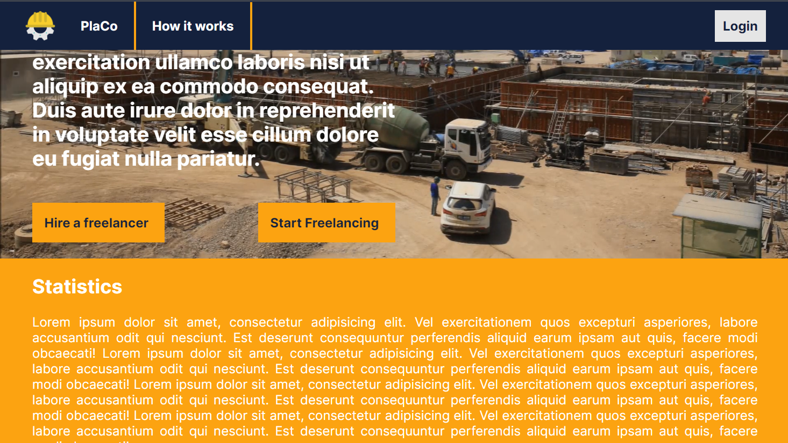
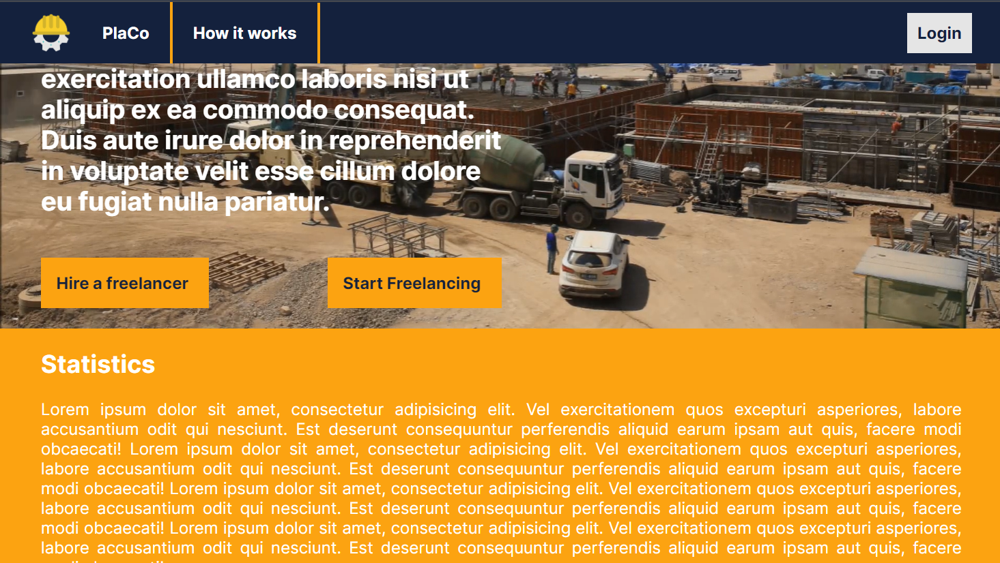

Platform for Constructing
Authors
- Medeleanu Daria
- Vulpescu Bianca
1. Introduction
1.1 Purpose
This document aims to provide an overview of the web application Platform for Constructing.
It will detail the application's objectives, functionalities, user interface and constraints under which it operates.
1.2 Intended Audience and Reading Suggestions
This document is designed for any user who may have an interest in utilizing the Platform for Constructing web application.
1.3 Product Scope
Platform for Constructing has been developed with the intended purpose of connecting construction professionals with potential clients.
2.Overall Description
2.1 Product Description
PlaCo (Platform for Constructing) is a web application designed to connect construction professionals with potential clients.
For each construction firm, essential information such as the company name and contact details will be stored. The platform will showcase portfolios of completed projects, allowing clients to view images of previous works. Clients can upload technical projects, work estimates, or descriptions of their requirements to receive quotations for the desired tasks. If a client requires multiple firms with different specializations, they can select the desired firm for each operation individually. Clients can review the total costs and rate the contracted firms or add comments (positive/negative). The firms will be able to give as well rates and comments on the client's profile. Ratings and comments will be moderated through an administrative account.
PlaCo aims to streamline the process of connecting construction professionals with clients efficiently.
2.2 Product Functions
The pages within the application are:
Home Page: contains general information about the application including Statistics and Reviews from users.
- Login button: redirects to the Login page
- How it works: redirects to the How it works page
- Hire a freelancer button: redirects to the Sign up page and creates a profile for a Client
- Start freelancing button: redirects to the Sign up page and creates a profile for a Freelancer(firm)
Login Page
- Username input: accepts the username of the user
- Password input: accepts the password of the user
- Forgot your password button: redirects to the Restore password page
- Login button: finalizes the login action, logging the user in, if the credentials are correct, and then redirects them to the Discover Freelancers page or Search for jobs page (depending on the profile type).
- Remember me checkbox: stores in a cookie the credentials so that the next time a user want to access the website it will automatically complete the login process.
- Sign up button: redirects to the Sign Up page
Sign up Page
- First name input: accepts the first name of the user
- Last name input: accepts the last name of the user
- Email input: accepts the email of the user
- Password input: accepts the password of the user
- Sign up as freelancer button: finalizes the sign up action and creates a freelancer profile for the user
- Sign up as client button: finalizes the sign up action and creates a client profile for the user
- Login button: redirects to the Login page
Forgot your password Page
- Email input: accepts the email of a valid user so that it can send an email where the user can recover the password.
- Reset your password button: finalizez the recovering password process.
- Back button: redirects the user to the Login page
How it works Page
- PlaCo button: redirects to the Home Page
- How it works button: redirects to the current page
- How to Hire a Freelancer button: displays the text that contains information about how to use this application as a Client
- How to Start your Freelancing button: displays the text that contains information about how to use this application as a Freelancer (firm)
- Login button: redirects to the Login page
Discover Freelancers Page: displays previews of Freelancers' profiles
- Post a new Project button: redirects to the Post a new Project page
- Profile button: pulls out a menu containing the Client Profile, Active Projects, Finished Projects and Settings pages, and the Log Out button
- Filters menu: contains buttons that filter the search by country, city and skills
- Search Freelancer input: accepts names of Freelancers (firms) that are registered within the app
- Apply Button: Filters the list of Freelancers taking into consideration the constraints
Search for jobs Page: displays previews of Active Projects posted by Clients
- Profile button: pulls out a menu containing the Freelancer Profile, Portfolio and Settings pages, and the Log Out button
- Filters menu: contains buttons that filter the search by country, city and skills
- Search a job input: accepts names of projects that are registered on the platform
- Apply Button: Filters the list of Projects taking into consideration the constraints
Client Profile Page: displays information about the user (profile picture, name, phone number, email address, address, joining date), tags for the client's professional areas and reviews.
- Discover Freelancers button: redirects to the Discover Freelancers page
- Post a new Project button: redirects to the Post a new Project page
- Profile button: pulls out a menu containing the Client Profile, Active Projects, Finished Projects and Settings pages, and the Log Out button
- See Active Projects button: redirects to the Active Projects page
- See Finished Projects button: redirects to the Finished Projects page
- Edit Profile button: redirects to the Edit Profile page for clients
Freelancer Profile Page: displays information about the user (profile picture, name, Phone number, Email address, Address, Joining date), tags for the freelancer's professional areas and Reviews.
- Search for jobs button: redirects to the Search for jobs page
- Profile button: pulls out a menu containing the Freelancer Profile, Portfolio and Settings pages, and the Log Out button
- See Portfolio button: redirects to the Portfolio page
- Edit Profile button: redirects to the Edit Profile page for Freelancers (firms)
Settings Page
- Change password button: shows popup where user has to reenter their old password and then set the new password
- Chande theme: toggle between light and dark mode
- See your statistics button: shows underneath the button engaging between user and the other users
Active Projects Page: displays previews for all the Client's active projects
- Discover Freelancers button: redirects to the Discover Freelancers page
- Post a new Project button: redirects to the Post a new Project page
- Profile button: pulls out a menu containing the Client Profile, Active Projects, Finished Projects and Settings pages, and the Log Out button
- Plus button: redirects to the Post a new Project Page
Finished Projects Page: displays previews for all the Client's finished projects
- Discover Freelancers button: redirects to the Discover Freelancers page
- Post a new Project button: redirects to the Post a new Project page
- Profile button: pulls out a menu containing the Client Profile, Active Projects, Finished Projects and Settings pages, and the Log Out button
Post a new Project Page
- Discover Freelancers button: redirects to the Discover Freelancers page
- Profile button: pulls out a menu containing the Client Profile, Active Projects, Finished Projects and Settings pages, and the Log Out button
- Title input: accepts the title of the Project
- Project Description input: accepts the description of the Project
- Upload file button: allows the user to upload files
- Skills required input: accepts tags that describe the skills required for the project
- Add button: saves the "Skills required input" text and displays it at "Skills selected" section
- Currency dropdown: allows the user to select from dropdown the currency of the estimated budget
- Size of the project menu: allows the user to select the size of the project according to how much they estimate it will value
- Menu Popup: Simple Project, Very Small Project, Small Project, Medium Project, Large Project, Very Large Project, Huge Project
- Post Project button: saves the new Project and adds it in the Active Projects page
Portfolio Page: displays previews for the Freelancer's personal work and finished projects
- Search for jobs button: redirects to the Search for jobs page
- Profile button: pulls out a menu containing the Freelancer Profile, Portfolio and Settings pages, and the Log Out button
- Plus button: redirects to the Add Item to Portfolio Page
Add Item to Portfolio Page
- Search for jobs button: redirects to the Search for jobs page
- Profile button: pulls out a menu containing the Freelancer Profile, Portfolio and Settings pages, and the Log Out button
- Title input: accepts the title of the portfolio item
- Portfolio Item Description input: accepts the description of the portfolio item
- Upload file button: allows the user to upload files
- Skills input: accepts tags that describe the Portfolio Item
- Add button: saves the "Skills input" text and displays it at "Skills selected" section
- Save button: saves the new Portfolio Item and adds it in the Portfolio page
2.3 Operating Environment
The Platform for Constructing application can be used on any device with a connection to the Internet and a browser installed.
2.4 Design and Implementation Constraints
The application uses HTML, CSS and JavaScript for the user interface.
3. External Interface Requirements
3.1 User Interfaces
 

3.2 Software Interfaces
To use this web application the user should have a stable Internet connection and access to a web browser.
3.3 Communications Interfaces
PlaCo requires an Internet connection.
4. System Features
4.1 See General Information
Users can create an account, login, see statistics about the application and see reviews of the customers.
4.2 Login
Users can login completing the following fields: Username, Password. Also an user can opt to store its credentials, can go to the recovery password page, or go to the signup page.
4.3 Signup
Users can signup completing the first name, last name, email and password fields, choosing the account type they need. If the account already exists they can go to the login page.
4.4 Recover password
Users can recover their password completing the email that is associated to the account.
4.5 See how the platform works
Users can see some general guidelines on how to use this application, according to the type of account they want to have (client or freelancer).
4.6 Client -> Discover freelancers
Clients can see the list of freelancers registered in the app, and they can filter the results by certain criteria: country, city, skills. They can also search for freelancers using their name. From this page they can post a new project, or go to their profile, see active projects, see finished projects, logout, or see settings.
4.7 Freelancers -> See jobs
Freelancers can see the list of jobs registered in the app, and they can filter the results by certain criteria: country, city, skills. They can also search for jobs using the name of the job they want. From this page they can go to their profile, see portfolio, logout, or see settings.
4.8 See profile
Clients and freelancers can see the profile information they introduces as well as active projects, finished projects, reviews in the case of clients and portfolio in the case of freelancers. From this page, both users can go to a separate page where they can edit their profiles.
4.9 Edit profile
Clients and freelancers can change the information added when creating their profiles or add some additional information.
4.10 Post new project
Clients can add a new project completing the title, project description, uploding files, adding tags, adding an estimated budget.
4.11 Add to portfolio
Freelancers can add to their portfolio a project completing the title, project description, uploding files, adding tags.
4.12 See active/finished projects
Clients and freelancers can see the active and finished projects that the clients proposed.
4.13 See portfolio
Clients and freelancers can see the portfolio of freelancers.
4.14 Change settings
Clients and freelancers can change the settings of their profiles (change password, change theme or see statistics).
5. Use of Technologies: Motivation
5.1 CSS
To make the app as easy to use as possible for everyone who either is a possible customer, or a constructions expert, we chose CSS in our project.
- Colors: we primarily chose 3 colors that get the user in the atmosphere of a constructions site: construction helmet, colors of tools, colors of concrete.
- Fonts: We chose the font 'Inter' because we found it visually appealing for our type of users who read carefully the description of projects.
- Layout: We mostly displayed the information in columns so that the information could be easily read.
- Responsiveness: We wanted the application to be accesible for any type of resolution, taking into consideration that nowadays a vast majority of people use their phone for business.